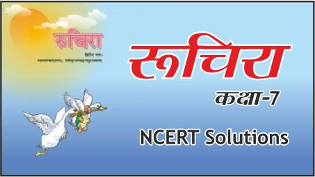
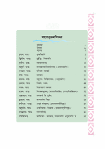

Satvik's Ruchira 7 PDF'S VIEW & DOWNLOAD
------------------------------------------------------------------------------------------------------------------------------------------------------------------------------------------------------------------------------------------------------------------------------------------
The National Council of Educational Research and Training (NCERT) publishes Sanskrit textbooks for Class 7.
The NCERT Class 7th Sanskrit textbooks are well known for it’s updated and thoroughly revised syllabus.
The NCERT Sanskrit Books are based on the latest exam pattern and CBSE syllabus.
NCERT has a good image when it comes to publishing the study materials for the students.
NCERT keeps on updating the Sanskrit books with the help of the latest question papers of each year.
The Class 7 Sanskrit books of NCERT are very well known for its presentation. The use of these books
is not only suitable for studying the regular syllabus of various boards but it can also be useful for the candidates appearing for various competitive exams.
 NCERT Class 7 Sanskrit Books are provided in PDF form so that students can access it at anytime anywhere
NCERT BOOK CHAPTERS OF SANSKRIT :--
Introduction + starting of book
Chapter 4 HASYABAALKAVISAMMELAN
Chapter 9 AHAMPI VIDYAALAYAM GACHATI
Chapter 11 SAMVAYOH HI DURJANAH
We hope the given NCERT Solutions for Class 7 Sanskrit रुचिरा भाग 2
(NOTE : UNDER-DEVELOPMENT PAGE)